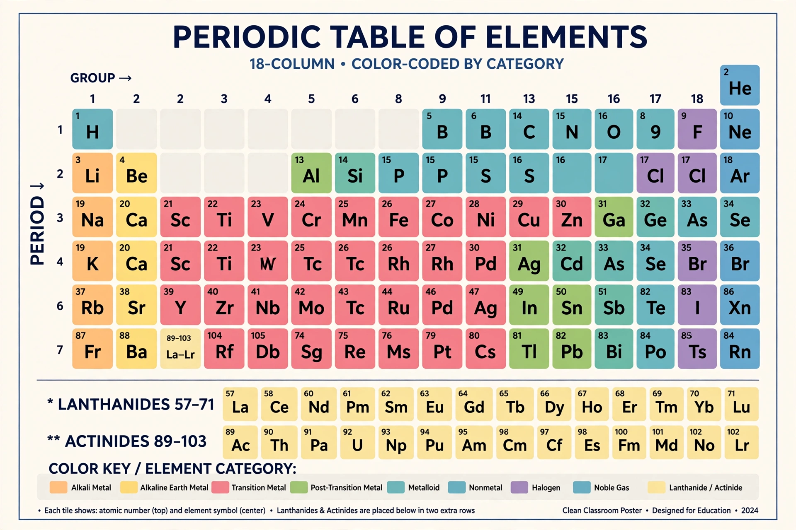

Periodic table

[Image: the standard periodic table — 18 columns, colour-coded by category: alkali metals, alkaline earth, transition metals, halogens, noble gases, lanthanides and actinides in rows below]The periodic table, also known as the periodic table of the elements, is an ordered arrangement of the chemical elements into rows ("periods") and columns ("groups"). It is an icon of chemistry and is widely used in physics and other sciences. The table's structure, that the elements are listed in order of their atomic numbers, shows periodic trends in their properties.
| 1 H | 2 He | ||||||||||||||||
| 3 Li | 4 Be | 5 B | 6 C | 7 N | 8 O | 9 F | 10 Ne | ||||||||||
| 11 Na | 12 Mg | 13 Al | 14 Si | 15 P | 16 S | 17 Cl | 18 Ar | ||||||||||
| 19 K | 20 Ca | 21 Sc | 22 Ti | 23 V | 24 Cr | 25 Mn | 26 Fe | 27 Co | 28 Ni | 29 Cu | 30 Zn | 31 Ga | 32 Ge | 33 As | 34 Se | 35 Br | 36 Kr |
Abbreviated table (first four periods) as remembered; the full table has 118 confirmed elements through oganesson (118).
History
Russian chemist Dmitri Mendeleev published the most recognisable early form in 1869, arranging elements by atomic mass and chemical properties — and bravely leaving gaps for undiscovered elements whose properties he predicted, strikingly confirmed when gallium and germanium were found. Lothar Meyer independently produced a similar table. Henry Moseley's work in 1913 re-based the ordering on atomic number, the modern basis. The heaviest elements are synthesised atom-by-atom in laboratories; element 118, oganesson, completed the seventh period.
Structure and trends
Elements in a group share outer-electron configurations and similar chemistry: group 1 alkali metals react vigorously with water; group 17 halogens are reactive nonmetals; group 18 noble gases are nearly inert. Atomic radius shrinks across a period and grows down a group; electronegativity and ionisation energy follow related trends, explained by quantum mechanics's model of electron shells. Interactive versions are published by the Royal Society of Chemistry at rsc.org.